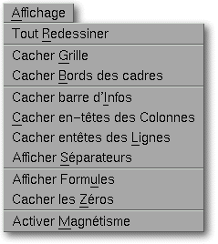

<!-- Documentation XQuad (c)1995-2000 AXENE contact axene@axene.org>
<html>

<head>
<title>Menu Affichage</title>
</head>

<body BGCOLOR="#FFFFFF" BACKGROUND="Images/back.gif" TEXT="#000000">

<p ALIGN="right">  </p>

<p><br>
<br>
Le menu déroulant Affichage permet d'accéder à des options faisant varier divers
paramètres d'affichage de l'interface. </p>

<p>De nombreuses entrées de ce menu sont doubles. En effet, en fonction du contexte,
l'intitulé d'une entrée peut varier. Par exemple, si la barre d'information est
affichée, une entrée de ce menu sera <i>&quot;Cacher barre d'Infos&quot;</i> et si la
barre n'est pas affichée, l'intitulé de cette même entrée sera <i>&quot;Afficher barre
d'Infos&quot;</i>. <br>
<br>
</p>

<hr>

<p align="center"><br>
 <br>
<small><i>Photo d'écran&nbsp;: Menu déroulant Affichage </i></small></p>

<p><br>
</p>

<hr>

<p><br>
</p>

<h3>Le menu Affichage comporte les entrées suivantes&nbsp;:</h3>

<ul>
  <li><a NAME="redraw_menu_entry">l'entrée <i>&quot;Tout Redessiner&quot;</i> permet de <b>rafraîchir
    la feuille de calcul</b> active. Cette option permet d'éliminer des erreurs d'affichage ;
    elle est à utiliser en premier lieu lorsque quelque chose semble erroné dans
    l'affichage. </a><br>
    &nbsp;</li>
  <li><a NAME="grid_menu_entry">l'entrée <i>&quot;Afficher/Cacher Grille&quot;</i> permet d'<b>afficher
    ou de cacher la grille des cellules</b>. La grille est l'ensemble des lignes horizontales
    et verticales qui montre la séparation des cellules en lignes et en colonnes. La grille
    n'apparaîtra pas par défaut à l'impression. La grille peut devenir magnétique pour les
    cadres si l'on active le magnétisme. </a><br>
    &nbsp;</li>
  <li><a NAME="frame_border_menu_entry">l'entrée <i>&quot;Afficher/Cacher Bords des
    cadres&quot;</i> permet d'<b>afficher ou de cacher le bord des cadres ayant une épaisseur
    nulle</b>. Lorsque l'on crée des cadres de couleur transparente, sans bords, superposés
    au-dessus d'autres cadres, il est commode de toujours pouvoir visualiser leurs contours.
    Par contre, lorsque l'on veut avoir un rendu proche de celui obtenu à l'impression, il ne
    faut pas que les bords d'épaisseur nulle apparaissent. </a><br>
    &nbsp;</li>
  <li><a NAME="hint_line_menu_entry">l'entrée <i>&quot;Afficher/Cacher barre d'Infos&quot;</i>
    permet d'<b>afficher ou de cacher la barre d'informations</b>. La barre d'informations
    donne des renseignements brefs sur le mode d'action utilisé et sur l'utilité des boutons
    icônes. </a><br>
    &nbsp;</li>
  <li><a NAME="column_headers_menu_entry">l'entrée <i>&quot;Afficher/Cacher en-têtes des
    Colonnes&quot;</i> permet d'<b>afficher ou de cacher les en-têtes des colonnes</b>. Les
    en-têtes de colonnes correspondent à la première 'ligne' de la feuille de calcul qui
    contient la coordonnée, sous forme de lettres, de chaque colonne (A, B, C, ... ,AA, AB,
    ...). </a><br>
    &nbsp;</li>
  <li><a NAME="row_headers_menu_entry">l'entrée <i>&quot;Afficher/Cacher en-têtes des
    Lignes&quot;</i> permet d'<b>afficher ou de cacher les en-têtes des lignes</b>. Les
    en-têtes de lignes correspondent à la première 'colonne' de la feuille de calcul qui
    contient la coordonnée, sous forme de nombre, de chaque ligne. </a><br>
    &nbsp;</li>
  <li><a NAME="page_separators_menu_entry">l'entrée <i>&quot;Afficher/Cacher
    Séparateur&quot;</i> permet d'<b>afficher ou de cacher les marques de séparation de page</b>.
    Ces marques sont des lignes verticales et horizontales, en pointillé, sur le bord de
    certaines lignes et colonnes, qui indiquent le découpage en pages imprimables de la
    feuille de calcul. </a><br>
    &nbsp;</li>
  <li><a NAME="formulas_menu_entry">l'entrée <i>&quot;Afficher Formules / Afficher
    Résultats&quot;</i> permet d'<b>afficher les formules ou bien d'afficher le résultat des
    formules</b>. </a><br>
    &nbsp;</li>
  <li><a NAME="zeros_menu_entry">l'entrée <i>&quot;Afficher/Cacher Zéros&quot;</i> permet
    d'afficher ou de cacher les cellules contenant la valeur nulle. &quot;Cacher les
    zéros&quot; permet de rendre vierges les cellules contenant la valeur 0 ou une formule
    ayant pour résultat 0. </a><br>
    &nbsp;</li>
  <li><a NAME="magnet_menu_entry">l'entrée <i>&quot;Activer/Stopper Magnétisme&quot;</i>
    permet d'<b>activer ou de stopper l'attraction des cadres par le bord des cellules</b>.
    Les bords des cellules (lignes de la grille) sont tous potentiellement magnétiques. Le
    magnétisme se manifeste dans certaines opérations de positionnement des cadres dans la
    feuille de calcul, par l'attraction du curseur souris par les lignes magnétiques. Le
    magnétisme permet d'aligner de manière précise les cadres sur le bord des cellules. </a></li>
</ul>

<p><br>
</p>

<hr>

<p ALIGN="right"></p>
</body>
</html>
